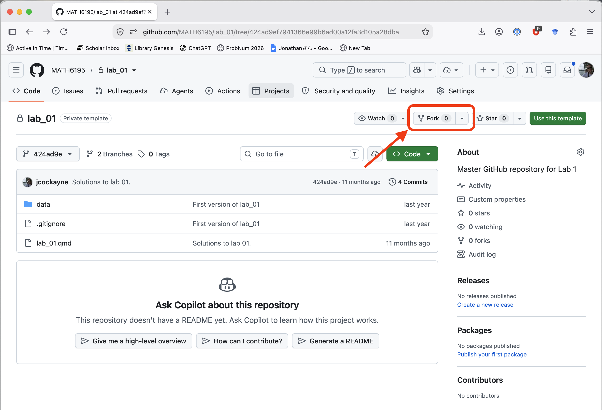
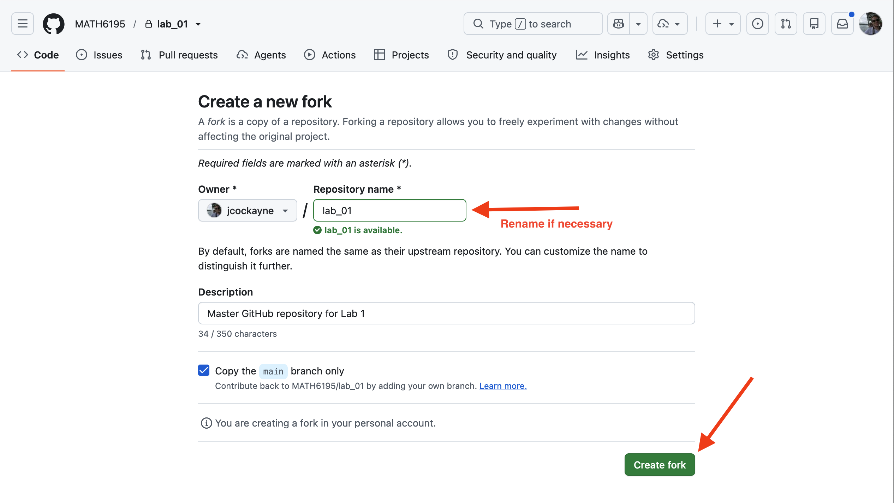
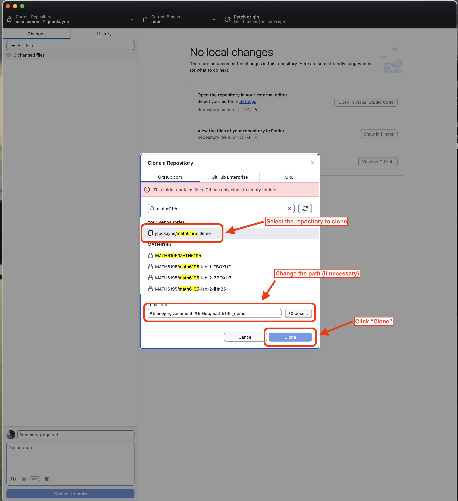
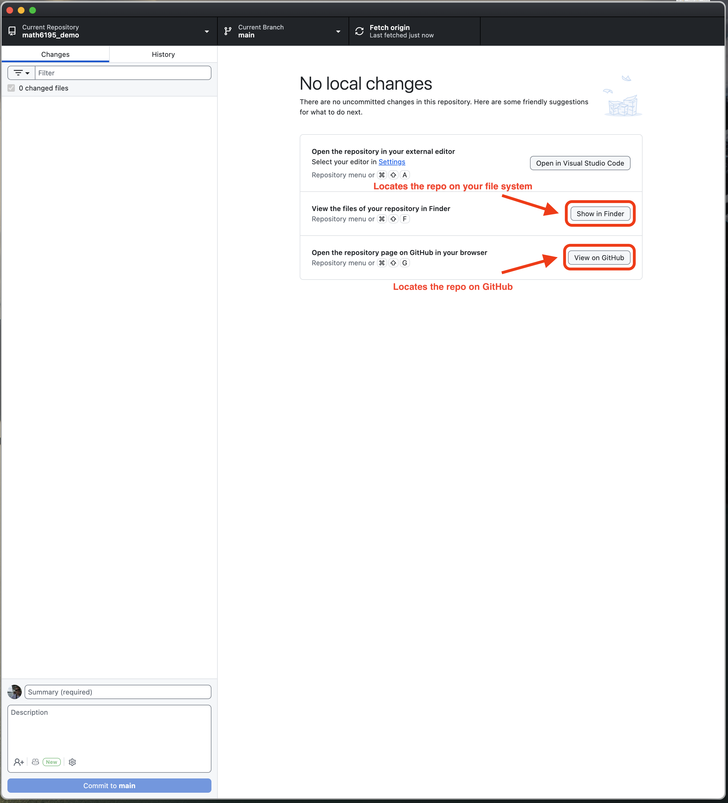
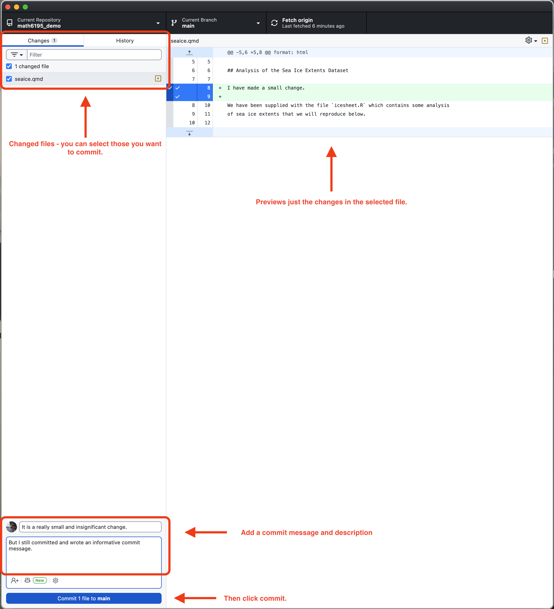
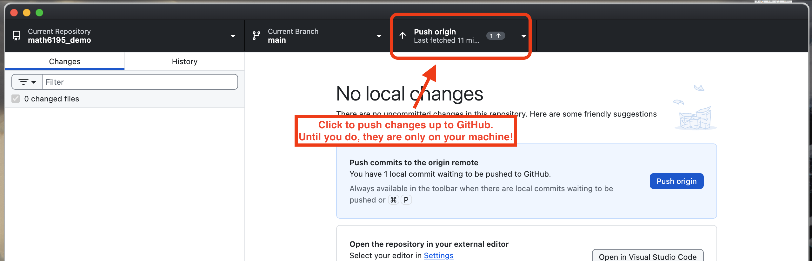

GitHub for FDS Tutorial
This tutorial walks you through the complete Git and GitHub workflow that we will use throughout Fundamentals of Data Science:
- Fork a repository on GitHub to create your own copy of it.
- Clone your copy to your local machine using GitHub Desktop.
- Make changes locally, then push them back up to GitHub.
We will be using GitHub Desktop, a free graphical application for Windows and macOS that you can download from here. If you prefer to work in the terminal, the equivalent commands are covered in Week 1 (Git in the Terminal).
Before you start
You will need:
- A GitHub account. If you do not have one, sign up for free at github.com. Use a sensible username — you may be sharing this work with tutors and future employers!
- GitHub Desktop installed on your machine, signed in with your GitHub account. (On University computers, GitHub Desktop should be available from the standard software list.)
- The URL of the repository you want to work with, e.g.
https://github.com/<owner>/<repository>.
Step 1: Forking a repository on GitHub
A fork is your own copy of someone else’s repository, held under your GitHub account. You can freely make changes to your fork without affecting the original, which makes it the standard way to work with course repositories.
- Log in to github.com in your web browser and navigate to the repository you want to work with.
- In the top-right corner of the repository page, click the Fork button.
- If prompted, confirm that you want to create the fork for your own account (not an organisation).
- Wait a few moments while GitHub creates the copy. When it is finished, you will be taken to your fork: the repository name at the top-left should now read
<your-username>/<repository>, and GitHub will note that it is forked from the original.
Important: from this point on, always work from your fork (
<your-username>/<repository>), not the original repository. You will only have permission to push changes to your own fork.
Forking creates a copy of the repository on GitHub (under your account). Cloning downloads a repository onto your computer. In this course you will normally do both: fork first, then clone your fork.


Step 2: Cloning your fork to your local machine
Now you will download your fork from GitHub onto your computer so that you can edit the files.
- Open GitHub Desktop.
- Go to
File > Clone Repository...(or click the Clone a Repository from the Internet… button on the welcome screen). - In the dialog, select the GitHub.com tab. Your fork should be listed under “Your repositories”; select it. (Alternatively, select the URL tab and paste in the URL of your fork, e.g.
https://github.com/<your-username>/<repository>.) - Choose a sensible Local path — this is the folder on your machine where the repository will be saved. Make a note of where this is; you will open these files in RStudio in the labs.
- Click Clone. GitHub Desktop will download the repository, and you can then open it locally (in a file explorer, or in RStudio via
File > Open Projectif the repository contains an.Rprojfile).


Step 3: Making changes and pushing back up to GitHub
Once you have edited files in your local copy (e.g. a Quarto document from a lab), you need to commit those changes and push them up to your fork on GitHub.
- Open GitHub Desktop and make sure your repository is selected in the dropdown at the top-left. Any files you have changed will appear in the left-hand panel.
- Select the files you want to save (or tick them all), and review the highlighted changes in the right-hand panel to check that you are committing what you expect.
- In the bottom-left corner, write a short summary describing what you have done (e.g.
Complete Week 1 lab exercises), optionally with a longer description underneath. - Click Commit to main. This saves a snapshot of your changes locally.
- Click Push origin at the top of the window. This uploads your commits to your fork on GitHub. When it completes, the changes will be visible on the GitHub website under your fork.
Tip: Get into the habit of committing and pushing regularly — ideally every time you complete a piece of work. Unpushed work only exists on your machine; pushed work is safely backed up on GitHub.


Keeping your fork up to date
If the original repository is updated after you fork it (for example, corrections to the lab materials), you can bring those changes into your fork:
- On GitHub (in the web browser), open your fork and use the Sync fork button to update it from the original repository.
- In GitHub Desktop, click Fetch origin, then, if changes are available, Pull origin to download them to your local copy.
Summary
| Task | Where | How |
|---|---|---|
| Fork | github.com | Fork button (top-right of the repository page) |
| Clone | GitHub Desktop | File > Clone Repository..., select your fork |
| Commit | GitHub Desktop | Select changed files, write a summary, Commit to main |
| Push | GitHub Desktop | Push origin |
| Pull (get updates) | GitHub Desktop | Fetch origin, then Pull origin |
| Sync fork | github.com | Sync fork button on your fork’s page |